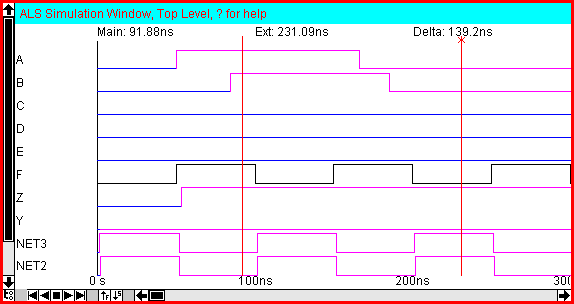
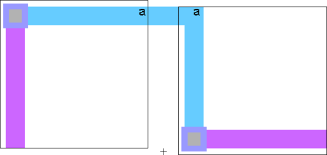

As an example of the JELIB format, let us assume a design with two levels of hierarchy.
The bottom level of hierarchy (cell "low") has 3 nodes, two arcs, and an export:

The top level of hierarchy (cell "high") has two instances of the cell
(the right instance is rotated 90 degrees) and an arc connecting them:

Here is the JELIB file for the above layout.
# header information:
Hccc|8.04
# Views:
Vlayout|lay
# Technology mocmos
Tmocmos|MoCMOSNumberOfMetalLayers()I6
# Cell high{lay}
Chigh;1{lay}||mocmos|1093555876000|1094258888640|
Ngeneric:Facet-Center|art@0||0|0|0|0||AV
Ilow;1{lay}|low@0||-14|12|||D5G4;
Ilow;1{lay}|low@1||15|12|R||D5G4;
AMetal-1|net@0||3|S0|low@1||5|22|low@0||-4|22
X
# Cell low{lay}
Clow;1{lay}||mocmos|1093555232000|1094258870406|
Ngeneric:Facet-Center|art@0||0|0|0|0||AV
NMetal-1-Metal-2-Con|contact@0||-10|10|5|5||
NMetal-1-Pin|pin@0||10|10|3|3||W
NMetal-2-Pin|pin@1||-10|-10|3|3||W
AMetal-1|net@0||3|S1800|contact@0||-10|10|pin@0||10|10
AMetal-2|net@1||3|S900|contact@0||-10|10|pin@1||-10|-10
Ea||D5G2;|pin@0||I
X
# Groups:
G|high;1{lay}
G|low;1{lay}
|